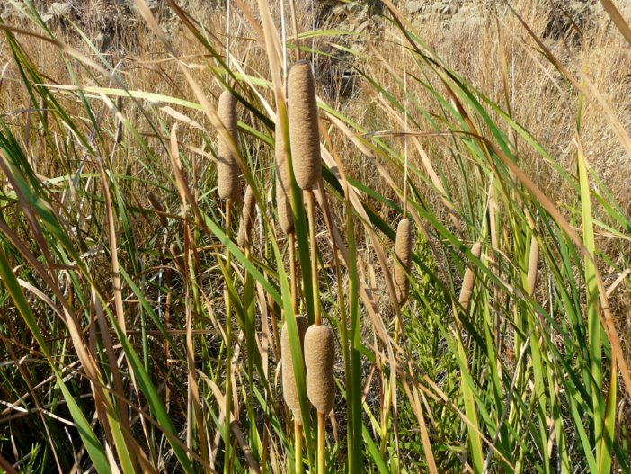
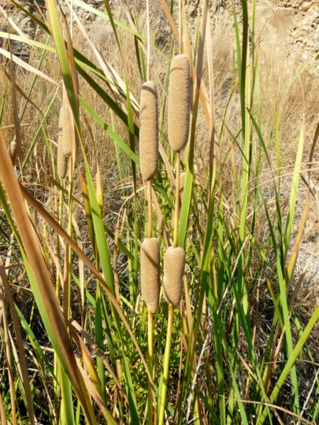
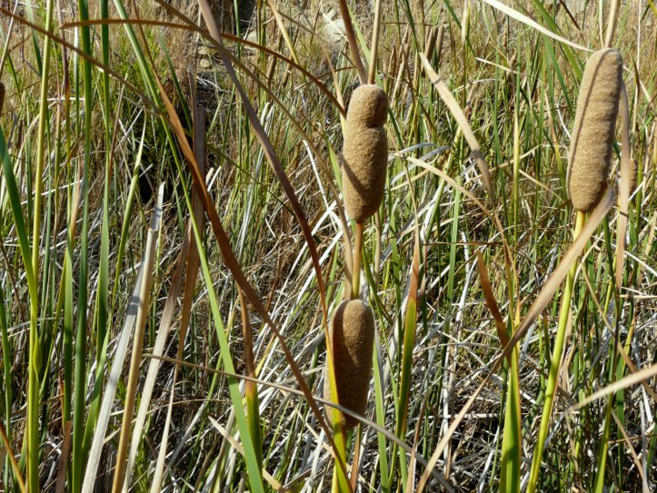

| PHRYGANA | Fauna | Flora | Galles | liste des espèces |
contact -
info - commentaires phrygana1 (at) gmail.com |
| Particularités crétoises | nouveautés | Mines | ressources naturelles |
| Typha domingensis (PERS.) STEUD. |
| 256 | Flora | TYPHACEAE JUSS. | Typha L. |
|
 Typha domingensis Agios Giorgos (Melanmbes) 04 septembre 2011 |
| Southern Cat-tail | |
| Feuilles: feuilles longues, larges de 4 - 14 mm, très légèrement torsadées | |
| Fleurs: parties mâles et femelles séparées sur la tige florale de 20 à 70 mm; parties femelles bruns, longs de 6 à 40 cm, larges de 2 à 2.5 cm; parties mâles fines, allongées ( 12 - 35 cm); les parties femelles se défaisant tardivement en septembre - octobre (-novembre); hampe florale 1-2 cm de diamètre | |
| Hauteur: 100 - 400 cm | Type biologique: géophyte rhizomateux |
| Floraison: mai juin juillet août septembre | |
| Altitudes: 0 - 400 m | |
| Statut en Crète: indigène | |
| Biotopes en Crète: ruisseaux, lacs, fossés, suintements | |
| Distribution: région Méditerranéenne, régions tropicales (Amériques, Hawai, Afrique) | |
| Belgique: absent | |
| Note: peut supporter des assèchement temporaires | |
|
 Typha domingensis Agios Giorgos (Melanmbes) 04 septembre 2011 |
|
 Typha domingensis Agios Giorgos (Melanmbes) 04 septembre 2011 |
| 10 février 2013 |
| © paul fontaine -- © Phrygana.eu 2007 -- 2013 |